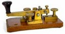
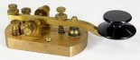
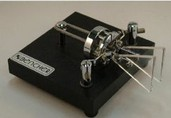
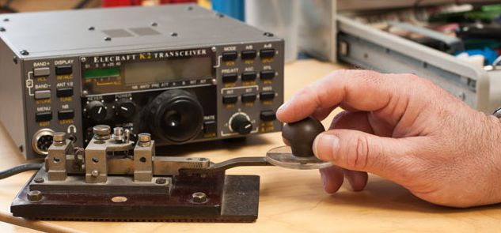

Morse Code
Learning
What is Morse Code? What is CW?
The Morse code is a long established form of communication. It was widely used for more than a century and provided its value in a variety of areas from land line telegraph systems through to radio communications.
The Morse code was developed by Samuel Morse and his associates in the middle of the nineteenth Century and has been in widespread use ever since. Initially the Morse code was used for sending messages over a telegraph system and as a result it became known as the Morse telegraph. This system became the first widespread method of sending messages over great distances. It was simple to use and flexible, and it soon became a World-Wide standard.
Later with the invention of wireless or radio communications, the simplicity of the Morse code lent itself to the transmissions of the day, and it soon gained a new applications becoming a mainstay for radio communications for many years.
Nowadays with the development of new technologies, the Morse code has been superseded in many areas. Despite this Morse code can still be heard when listening on the HF radio bands, and in fact it is still in widespread use in amateur radio or ham radio circles.
What is the Morse code?
The Morse code is a code that uses a series of dots and dashes to represent the different letters of the alphabet, numbers and procedural notations. In this way it is possible to send a message in Morse code by simply turning a signal on and off in the correct manner to represent the dots and dashes.
By definition a dot is one unit long, and a dash is three units long. Spaces between adjacent dots and dashes are one unit long, the gap between letters is three units long, and between words it is five.
As an example the Morse code for A is a dit followed by a dash or 'dah'.

What is CW?
Essentially CW refers to a Morse transmission using a radio signal - the abbreviation coming from the fact that it uses a Carrier Wave, or Continuous Wave that is interrupted. There is no modulation (apart from the breaks caused by the Morse characters).
In this way, CW can be used to denote a simple Morse transmission that interrupts the carrier to give the required Morse characters.
Although interrupted audio tones can be used to modulate a signal, this would not strictly be noted as CW. Sometimes the term MCW has been used to denote the term Modulated Carrier Wave.
For standard Morse transmissions the terms Morse and CW are interchangeable - CW being shorter to send in Morse than the word Morse.

How is the Morse code used
The way in which Morse code is transmitted is quite straightforward. For radio applications such as ham radio / amateur radio, all that is needed is a radio frequency signal that can be turned on and off. In view of the fact that generating the signal is relatively straightforward, this means that the transmitters can be made more easily than for some of the other types of transmission that are heard on the short wave bands. This makes Morse an ideal medium for use in ham radio or amateur radio for those people who like constructing their own equipment.
To receive the signal is a little more complicated. If the signal was received on an ordinary domestic radio, all that should be heard are clicks and plops as the signal turns on and off. To generate the characteristic Morse tone, the radio receiver must be equipped with a beat frequency oscillator, BFO, or carrier insertion oscillator, CIO. This generates a signal within the receiver that beats with the incoming signal to generate an audio tone that is associated with a Morse signal, and can also be easily read.
Most radio receivers used in ham radio will have a BFO which can be used for receiving Morse code signals. Today most HF band radios will have a mode switch position specifically for Morse / CW. If not specifically marked for Morse or CW, a position marked SSB is equally effective. Some older radios may have a BFO or CIO which needs to be turned on separately.
When transmitted, messages can be sent relatively quickly using the various sets of abbreviations available to ham radio and other radio communications operators. With operators commonly able to send at speeds of 20 words a minute and more, it is possible to communicate effectively and quickly using the Morse code.

Advantages of the Morse code
The are several advantages to Morse code or CW even in these days of advanced technology, digital transmissions and the like:
- Simplicity: It simplicity gives it a number of advantages. The first has already been mentioned and is its simplicity. The overall equipment required for transmitting and receiving Morse code is relatively straightforward and this makes it ideal for ham radio constructors. Simple ham radio transmitters consisting of just a few transistors can be built and used to make contacts with ham radio stations all around the globe.
- Bandwidth: The rate at which signalling is performed is relatively low and this means that it occupies only a small bandwidth. This gives two advantages. The first is that a large number of stations can occupy a small section of the band, and secondly narrow filters can be used to reduce the level of background noise and interference. Coupled to this the human brain can read Morse signals when they are lower than the surrounding noise level. As a result it is possible to copy a Morse signal at a lower strength than any other form of transmission.
- International appeal: The use a large number of abbreviations and the formalised formats for ham radio contacts means that Morse or CW can be sued by people from around the globe even with a poor command of languages like English that are widespread. Using the standard abbreviations basic contacts can be conducted with a limited knowledge of the language of the other person. This may not be possible using other modes of transmission.

Using the Morse code
The main use of the Morse code these days is within ham radio or amateur radio. When using the Morse code, widespread use is made of abbreviations and codes. While this may make any messages difficult to decipher for a newcomer to ham radio, the codes are quickly leaned and their value recognised. They provide a very powerful means of communicating quickly and concisely. By using them it is often found that actual information can be sent almost as quickly as if it was sent via the spoken word.
The use of the codes, forces a much more concise form of communication apart from allowing fewer letters to be sent. The other advantage of using these codes is that they enable ham radio operators who may not be able to speak English (the most widely spoken language on the air) to be able to communicate with a much wider number of people. By using the codes it is possible to communicate with other ham radio stations quite easily with only a minimal knowledge of English.
Summary
Morse may not seem to be the latest in technology, and it could never be argued otherwise. However CW still has many advantages within ham radio even in today's high tech world. It is possible to use it when signal strengths are low, and it enables much simpler equipment to be used. For amateur radio operators it is worth giving it a go and tasting some of the pleasure of operating using the Morse code as a serious mode of transmission - possibly with equipment you have built yourself.